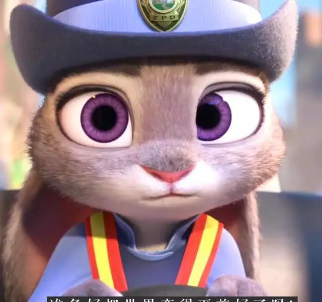
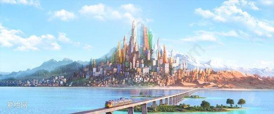

朱迪的梦想与挫折

兔子朱迪从小立志成为警察，尽管周围人认为兔子不适合这一职业，她仍通过努力成为动物城首位兔子警官。然而，入职后她被牛局长（非洲水牛）轻视，被派去担任交通警察，工作内容枯燥且不被重视
案件调查与尼克登场
动物城接连发生食肉动物神秘失踪事件，朱迪主动请缨调查水獭奥獭顿的失踪案，但牛局长只给她48小时破案。在调查中，她遇到以诈骗为生的狐狸尼克，并利用他的税务问题胁迫他协助破案

动物城（Zootopia）是一个由不同动物物种组成的乌托邦式大都市，分为撒哈拉广场、冰川镇、雨林区等多个区域，适应不同动物的习性。在这里，“任何人能成就任何事”是城市的座右铭，但现实中仍存在偏见与歧视


兔子朱迪从小立志成为警察，尽管周围人认为兔子不适合这一职业，她仍通过努力成为动物城首位兔子警官。然而，入职后她被牛局长（非洲水牛）轻视，被派去担任交通警察，工作内容枯燥且不被重视
动物城接连发生食肉动物神秘失踪事件，朱迪主动请缨调查水獭奥獭顿的失踪案，但牛局长只给她48小时破案。在调查中，她遇到以诈骗为生的狐狸尼克，并利用他的税务问题胁迫他协助破案
两人追踪线索，发现失踪的食肉动物被狮市长秘密关押。朱迪将此事公之于众，狮市长下台，绵羊副市长继任。朱迪因破案成为英雄，但在记者会上无意中暗示“食肉动物天性野蛮”，引发社会对食肉动物的歧视，导致尼克与她决裂
朱迪回到家乡后，发现导致动物发狂的是一种名为“午夜嚎叫”的植物毒素。她意识到这是绵羊副市长的阴谋——后者企图煽动食草动物与食肉动物的对立，巩固权力。朱迪向尼克道歉，两人重新合作，最终揭露绵羊的阴谋并恢复动物城的和平